跳彈坦克 v0.4
這一版照你的三個指示改：彈種遊戲中不能換、彈種圖示重畫、取消同機雙人；地雷鈕與分數板不再被擋。另外做了第八、九輪獨立審查的修正。
▶ 試玩／安裝（手機橫放）
裝到 iPhone（不用 Mac）
- 用 Safari 打開上面的「試玩／安裝」
- 按下方的 分享（方框加向上箭頭）→ 加入主畫面 → 新增
- 主畫面出現「跳彈坦克」圖示，點開就是全螢幕，打橫玩
…/ricochet-tanks/app/），進度和圖鑑會保留。已經裝過的人重新整理一次就是新版；如果還是舊的，把主畫面圖示刪掉再加一次。
你這次說的
| 你說的 | 怎麼做 |
|---|---|
| 放地雷的按鈕被擋住、血量也會擋住畫面 | 原因是瀏海機種的左側安全區把分數板推進場地、蓋到地雷鈕。分數板縮成兩列，命數改成「♥ 3」；寬度不超出場地外框（離外框 ≥ 12 pt）；左邊空白太窄時自動收掉章節標籤。下方 notch 那張是模擬 iPhone 橫放（左右安全區 59 pt）的畫面。 |
| 遊戲中不能換武器 | 換彈鈕、鍵盤 Q／Tab／1–5、手把 Y、連線的換彈全部拿掉。右搖桿上方只剩一張顯示目前彈種的小牌子（不能點）。彈種在開局選好。 |
| 武器小圖示重新設計 | 標準＝一顆大尖頭彈＋直線；火箭＝黃尾翼＋火焰；跳彈＝大「Z」折線加牆；散彈＝一點發三顆大彈；爆裂＝炸彈＋爆風圈。選彈卡與遊戲中的小牌子用同一組。 |
| 取消同機雙人 | 標題入口、選單、雙人版面都拿掉了（連線對戰的 2 人合作戰役還在）。 |
審查（10 分＝跟標竿一樣好）
| 輪 | 平均 | 審查說最該修的 | 怎麼處理 |
|---|---|---|---|
| 第八輪（v13） | 6.6 | 坦克灰階下跟地板同明度；黃／薄荷隊圈太弱；黃旗被方塊擋；UI 蓋住場地；桶和草叢像複製貼上 | 隊圈加深色外緣、旗最後畫不被擋、新發現卡搬到右側、桶與草叢加變化 |
| 第九輪（v14） | 6.7 | 瀏海版面貼邊；小牌子貼搖桿環；標準彈圖示太輕；隊圈仍偏弱 | 外框留 12 pt、牌子縮矮、圖示再重畫、圈外緣再加深 |
還沒做：擊毀特效缺「變暖白」過場、標題示範對打被標題字蓋住。審查認為差距最大的是坦克太小（約 23 pt）：要改的話是把場地 20×14 縮成 16×11，52 關加 12 張地圖都要重排，等你決定。
彈種（新圖示）
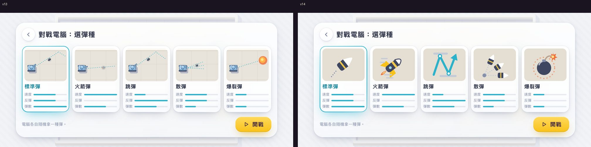
HUD 版面
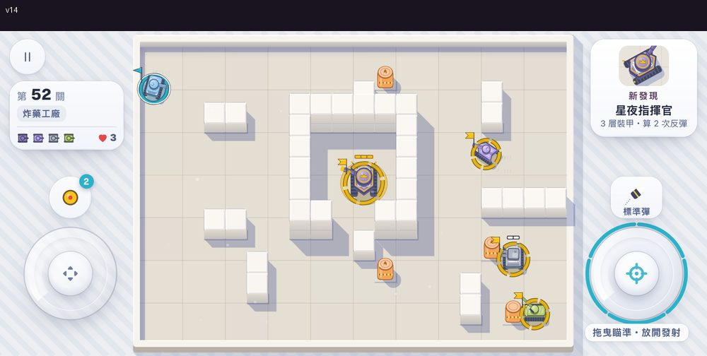
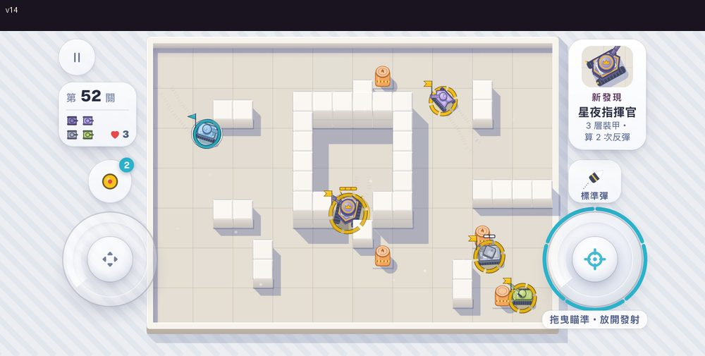
標題、戰役、2 對 2
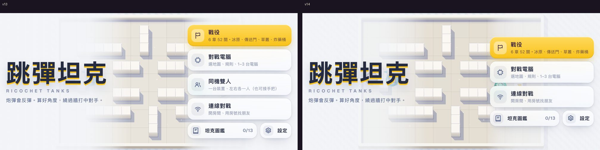
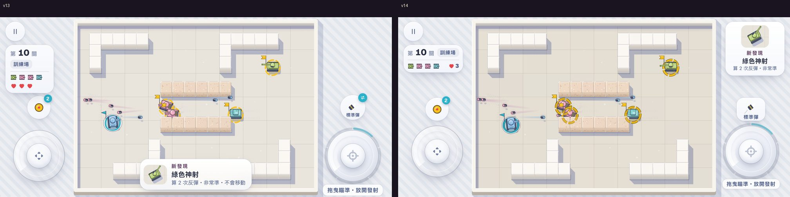
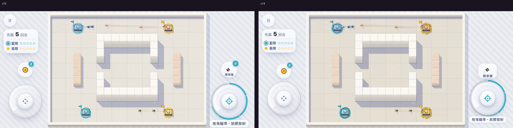
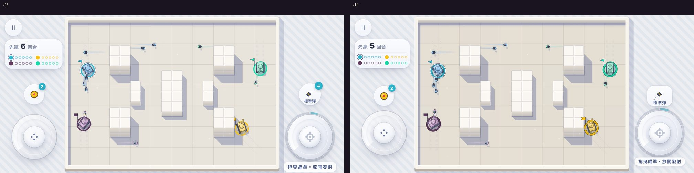
地形與頭目
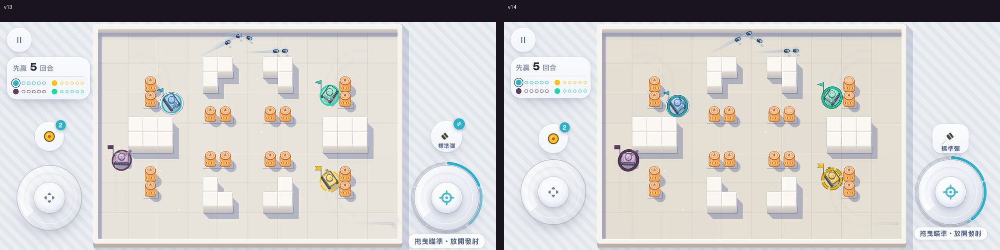
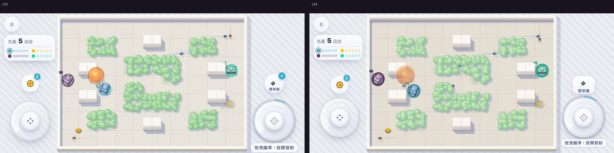
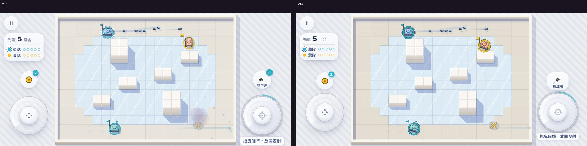
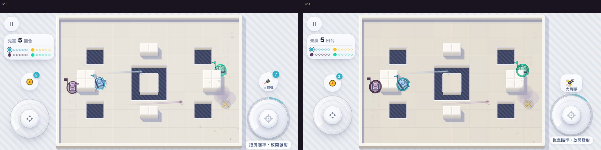
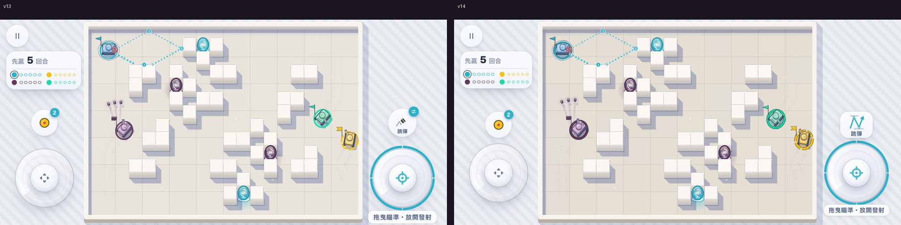
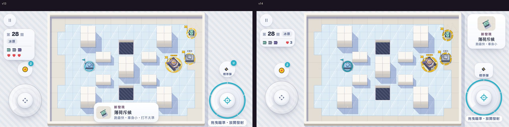
章節、圖鑑、結算
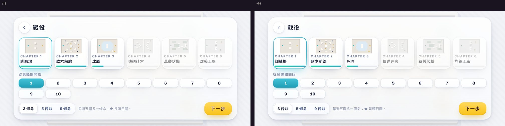
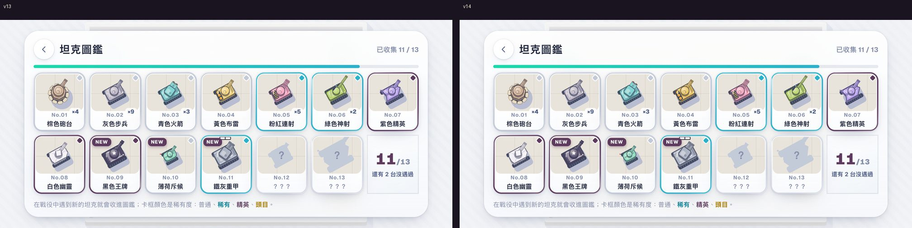
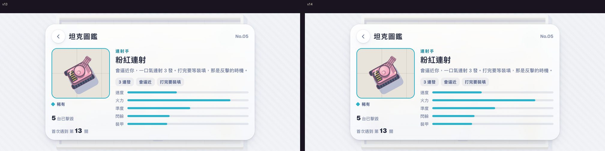
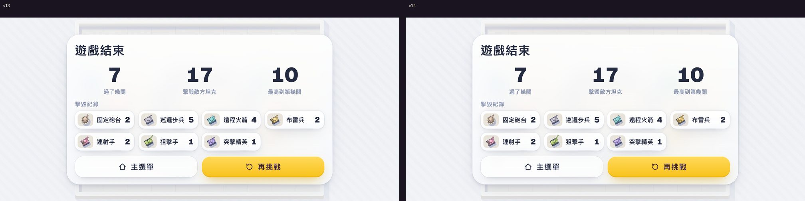